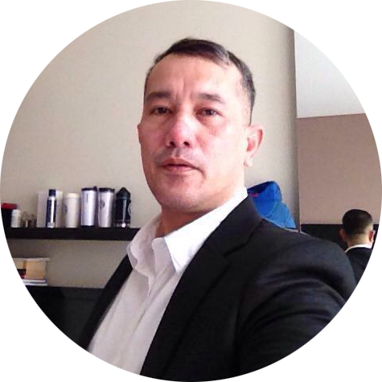

Teuku Yordan
Founder
Research
Entrepreneur. Commercial Diver at Gulf Of Mexico. Has been doing business research on full-time basis for the past eight years

Roy Adhie
Co-Founder
Technology Advisor
Entrepreneur. Lecturer. Hold a Ph.D degree in Electrical Engineering from ITB
Aditya Pradana
Technology Leader
Major in Electrical Engineering and Information Technology from UGM
Risti Ulfa
Digital Leader
Currently finishing her Master Degree Candidate majoring at Visual Designer at Institute Technology of Bandung
Rio Chandra R
System Information Team Member
Graduate Candidate at ITB Majoring in Informatics Engineering
Ahmad Fajar P
System Information Team Member
Graduate Candidate at ITB Majoring in Informatics Engineering
2008
It all started in 2008 with research on business ecosystem by Teuku Yordan and Joanna Yordan with the objective to integrate consulting services and bring down the consulting service price.
2010
In 2010, we assisted the CEO of Upstream NOC (PERTAMINA) to develop organization matrix map to align operation indicators of 7 subsidiaries to overall Upstream strategy and enable CEO to find root cause of problem of any under performance in operation.
2011
In 2011, we are fortunate to meet Roy Adhie and join us as co-founder of the company. He has contributed enormously on technology side of the system and setting up back office in Bandung, Indonesia
2016
In 2016, We welcome Aditya Pradana and Risti Ulfa join the company as Technology Leader and Digital Leader.